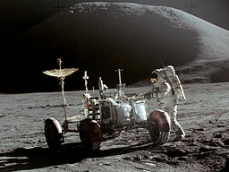

Apollo 15
It was the first J mission,
with a longer stay on the Moon and a greater focus on science
than earlier landings.
Apollo 15 saw the first use of the Lunar Roving Vehicle.
The mission began on July 26 and ended on August 7,
with the lunar surface exploration taking place between July 30 and August 2.
They spent 18 and half hours on the Moon's surface on four extravehicular activities (EVA),
and collected 170 pounds (77 kg) of surface material.
at the end of Apollo 15's 74th lunar orbit,
[18] the engine was fired for the journey home.
During the return trip, Worden performed the first spacewalk in deep space.
The Apollo 15 mission splashed down safely on August 7 despite the loss of one of its three parachutes.
